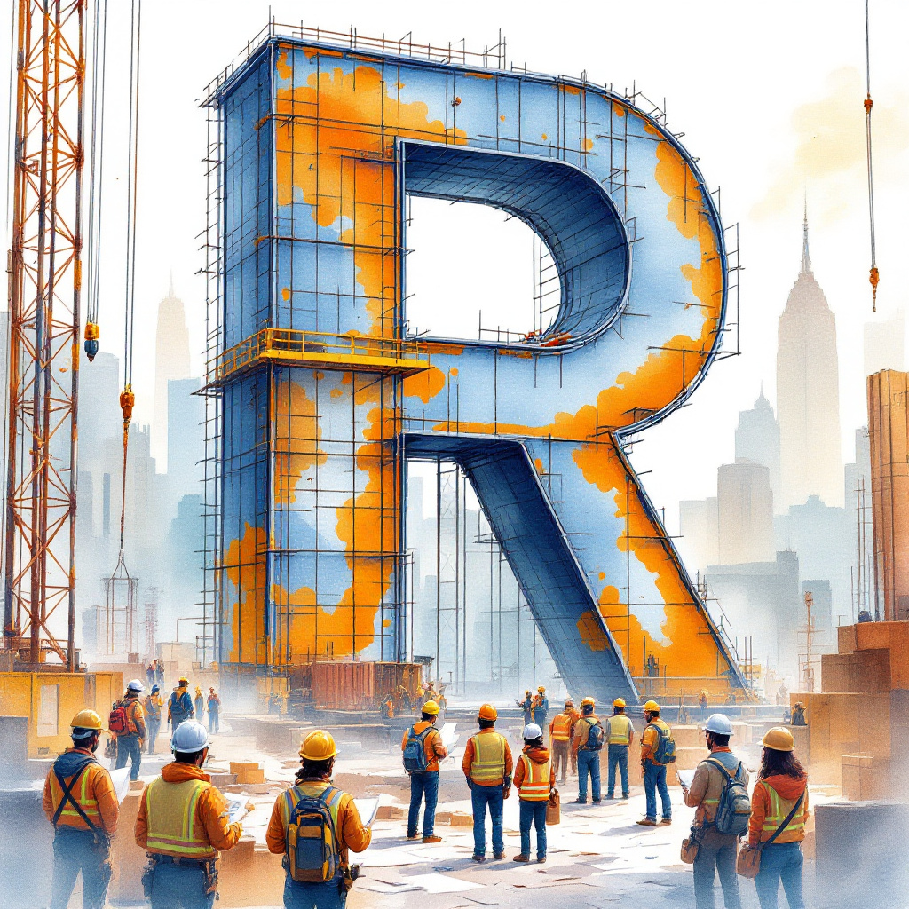

# Example of a list in R
my_list <- list(
numbers = c(1, 2, 3),
text = "Hello, R!",
data_frame = data.frame(x = 1:3, y = c("a", "b", "c"))
)
my_list$numbers
[1] 1 2 3
$text
[1] "Hello, R!"
$data_frame
x y
1 1 a
2 2 b
3 3 cSteven P. Sanderson II, MPH
October 22, 2024
Programming, R lists, Loop in R, purrr package, R programming, Data manipulation R, Base R functions, Functional programming R, R data structures, Iterating lists R, R for loops, How to use map function in R purrr, Comparing base R loops vs purrr, Efficient list manipulation techniques in R, Converting Celsius to Fahrenheit list R, Troubleshooting common R list looping errors
R programming has become an essential tool in the world of data analysis, offering powerful capabilities for manipulating and analyzing complex datasets. One of the fundamental skills that beginner R programmers need to master is the ability to loop through lists efficiently. This article will guide you through the process of looping through lists in R using both base R functions and the popular purrr package, complete with practical examples and best practices.
Before we dive into looping techniques, it’s crucial to understand what lists are in R. Unlike vectors or data frames, which are homogeneous (containing elements of the same type), lists in R are heterogeneous data structures. This means they can contain elements of different types, including other lists, making them incredibly versatile for storing complex data.
Looping through lists is a common task in R programming for several reasons: 1. Data processing: When working with nested data structures or JSON-like data. 2. Applying functions: To perform the same operation on multiple elements. 3. Feature engineering: Creating new variables based on list elements. 4. Data aggregation: Combining results from multiple analyses stored in a list.
R offers several ways to loop through lists. We’ll focus on two main approaches: 1. Base R loops (for and while) 2. Functional programming with the purrr package
The for loop is one of the most basic and widely used looping constructs in R.
Example 1: Calculating squares of numbers in a list
While loops are useful when you need to continue iterating until a specific condition is met.
Example 2: Finding the first number greater than 10 in a list
The purrr package, part of the tidyverse ecosystem, provides a set of tools for working with functions and vectors in R. It offers a more consistent and readable approach to iterating over lists.
To use purrr, first install and load the package:
The map() function is the workhorse of purrr, allowing you to apply a function to each element of a list.
Example 3: Applying a function to each element of a list
map2() and pmap() are useful when you need to iterate over multiple lists simultaneously.
Example: Combining elements from two lists
When deciding between base R loops and purrr functions, consider:
purrr functions perform similarly. For complex operations, purrr can be more efficient.purrr functions often lead to more concise and readable code, especially for complex operations.purrr provides a consistent interface for working with lists and other data structures.[[]] for list indexing: Use list[[i]] instead of list[i] to access list elements.safely() or possibly() from purrr to handle errors gracefully.Now it’s time to practice! Try solving this problem:
Problem: You have a list of vectors containing temperatures in Celsius. Convert each temperature to Fahrenheit using both a base R loop and a purrr function.
Solution:
# Base R solution
fahrenheit_base <- vector("list", length(temp_list))
for (i in seq_along(temp_list)) {
fahrenheit_base[[i]] <- (temp_list[[i]] * 9/5) + 32
}
# purrr solution
fahrenheit_purrr <- map(temp_list, ~(.x * 9/5) + 32)
# Check results
print(fahrenheit_base)[[1]]
[1] 68 77 86
[[2]]
[1] 59.0 64.4 71.6
[[3]]
[1] 82.4 89.6 95.0[[1]]
[1] 68 77 86
[[2]]
[1] 59.0 64.4 71.6
[[3]]
[1] 82.4 89.6 95.0for and while loops for iterating through lists.purrr package provides functional programming tools like map() for list operations.purrr based on readability, performance, and personal preference.Mastering the art of looping through lists in R is a crucial skill for any data analyst or programmer working with this versatile language. Whether you choose to use base R loops or the more functional approach of purrr, understanding these techniques will significantly enhance your ability to manipulate and analyze complex data structures. Remember, the best way to improve is through practice and experimentation. Keep coding, and don’t hesitate to explore the vast resources available in the R community!
What is the difference between a list and a vector in R? Lists can contain elements of different types, while vectors are homogeneous and contain elements of the same type.
Can I use loops with data frames in R? Yes, loops can be used with data frames, often by iterating over rows or columns. However, for many operations, it’s more efficient to use vectorized functions or apply family functions.
Is purrr faster than base R loops? For simple operations, the performance difference is negligible. However, purrr can be more efficient for complex operations and offers better readability.
How do I install the purrr package? Use install.packages("purrr") to install and library(purrr) to load it in your R session.
What are some alternatives to loops in R? Vectorized operations, apply family functions, and dplyr functions are common alternatives to explicit loops in R.
Did you find this guide helpful? We’re always looking to improve and provide the best resources for R programmers. Please share your thoughts, questions, or suggestions in the comments below. And if you found this article valuable, don’t forget to share it with your network on social media.
Happy Coding! 🚀

You can connect with me at any one of the below:
Telegram Channel here: https://t.me/steveondata
LinkedIn Network here: https://www.linkedin.com/in/spsanderson/
Mastadon Social here: https://mstdn.social/@stevensanderson
RStats Network here: https://rstats.me/@spsanderson
GitHub Network here: https://github.com/spsanderson